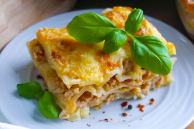

| Название блюда |
Оценка |
Ссылка на рецепт |
Фото блюда |
Суп-пюре из моркови |
10 |
Безумно простой и безумно вкусный морковный суп-пюре!!! Сразу оговорюсь, что варить можно как на воде, так и на курином бульоне. |
|
Азу из индейки |
10 |
Азу - традиционное блюдо татарской кухни, состоящее из обжаренных кусочков мяса, тушенных в томатном соусе с луком, обжаренным картофелем и кусочками солёного огурца. |
|
Лазанья классическая с фаршем в духовке простая |
10 |
Вкусная, сытная, ароматная. Пальчики оближешь! Запечь лазанью классическую с фаршем в духовке сможет даже начинающая хозяйка |
 |
Ризотто с фаршем |
10 |
Ризото готовят с любыми видами фарша: из говядины, свинины, баранины, птицы. В этот раз ризотто будет с куриным фаршем... |
|
Лисички жареные в сметане |
10 |
Вкусный сезонный рецепт жареных грибов Лисичек с луком и помидорами черри в сметане. Блюдо также можно приготовить из замороженных лисичек. |
|